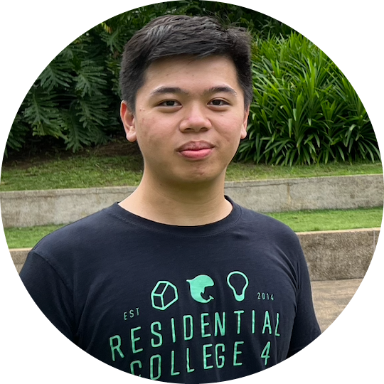

|  |
Dennis Wong Guan Ming 黃冠銘Electronic engineering graduate from the Hong Kong University of Science and Technology Johor Bahru, Malaysia Email: denniswong178@gmail.com | Phone(HK): +852 56602300 | Phone(MY): +60 11-11469306 |
| COMP2011 | Programming with C++ |
| COMP2012 | Object Oriented Programming and Data Structures |
| ELEC4240 | Deep Learning in Computer Vision |
| LANG1310 | French: World Language and Culture |